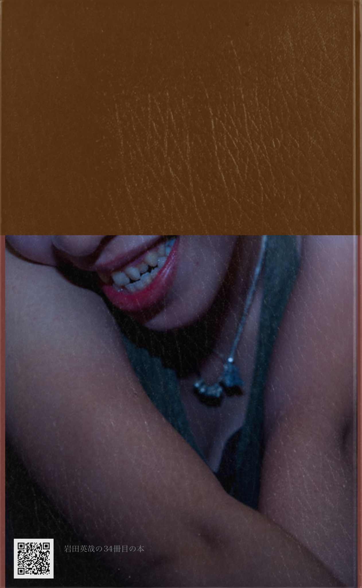

| 『赤い繭』論 安部公房 | |
| 岩田英哉 | |
| もぐら通信社 (2018) | |
安部公房の初期短編「赤い繭」を論じたもの。
この本はBCCKSで発行された
『『赤い繭』論』
著 者：岩田英哉
発 行：もぐら通信社
のEPUB版です。
EPUB版は、BCCKSの紙面とレイアウトや表示が異なります。
BCCKS版の閲覧は、以下のURLをご覧ください。
http://bccks.jp/bcck/156336/info

Powered byBCCKS
───────────────────────
『赤い繭』論
岩田英哉
もぐら通信社
───────────────────────
『赤い繭』論
「『箱男』論～奉天の窓から8枚の写真を読み解く～」（もぐら通信第３４号）より、シャーマン安部公房の儀式の式次第は、次のようなものでした。
1。差異(十字路)という神聖な場所を設けて、
2。その差異に向かって、また其の差異で呪文を唱えて、
3。その差異に、存在を招来し、
4。主人公と読者のために、存在への方向を指し示す方向指示板たる立て札を存在の十字路(差異)に立て、または案内人か案内書を配し、
5。存在を褒め称え、荘厳(しょうごん)して、
6。最後に、次の存在への方向を指し示す方向指示板たる立て札を立てる。
という、このような、安部公房の秘儀の式次第でありました。
安部公房の読者が、安部公房の作品を読むための便覧として役立つように、もう少し簡略に
してお伝えすると、
1。差異を設ける。
2。呪文を唱える。
3。存在を招来する。
4。存在への立て札を立てる。
5。存在を荘厳(しょうごん)する。
6。次の存在への立て札を立てる。
ということになります。
『赤い繭』という全集で３ページの短編の中に如何に此の６つのプロセスが、既に此の時確立しているかを見て見ましょう。
1。差異を設ける。
次のような差異を、安部公房は設けて、祈祷の祭壇としております。
（１）時差：時間的な差異
①
夕暮れ
即ち、昼と夜の時間の隙間：
「日が暮れかかる。」
（２）隙間：空間的な差異
①
家と家の隙間
「俺は家と家との間の狭い割れ目をゆっくり歩き続ける。」
2。呪文を唱える。
「街中こんなに沢山の家が並んでいるのに、おれの家が一軒もないのは何故だろう？......と、何万遍かの疑問を、また繰り返しながら。」（傍線筆者）
呪文は繰り返しの祈祷の言葉であり、魔術的な繰り返しの言葉です。ここでの呪文は、
（１）何万遍かの疑問であり、
（２）その疑問の言葉、具体的な呪文の言葉は、「街中こんなに沢山の家が並んでいるのに、おれの家が一軒もないのは何故だろう？」という言葉であり、疑問なのです。この疑問の言葉を何万遍も繰り返すのです。
そして、大事なことは、呪文の繰り返しに入る前に、「......」という、安部公房の意識から無意識へと落ちてゆく此の独白の余白が置かれていることに注意を払いましょう。安部公房は自分自身にとって極めて重要で本質的なことに質問が触れると途端に（超越論的にと言っても同様です、我を忘れて）没我の状態になるのです。 ［註１］
［註１］
一番良い例は、安部公房が書いた詩を見ることです。このもぐら通信で何度も引用した『主観と客観』と題した詩をご覧ください。
「しぐれ行く黄昏の鈍色（にぶいろ）よ
木の間木の間に
よび返し ものおじしつゝ
泣くのは誰ぞ？
闇と嘆きと............蹲る影
おゝ悲しき現在（いま）よ つれなしの
吾が在り様のことはりよ
されど物問ふ唇に
黙して傾ぐ愛の眼に
返り叫ぶ君がさゝやき
姿見の照り返し
夕辺に満てるあらけなの
吾が在り様の夢と夢
あはれ此処には吾れも無し
大地は天に駆け消えて
ゆくさもくさも雨のそぼふり
蹲る影 おゝ血と涙
さすらひの初め
ひそけさよ
おゝかの言葉 吾が胸に
帰れと叫ぶ かの言葉！
己が心の木の間 木の間に
誰かこゞみてすゝり泣く」
（安部公房全集第１巻、１６５ページ、詩集『没我の地平』：（１９４６年冬頃。安部公房２２歳））
ここでも、
（１）差異を設ける。
「しぐれ行く黄昏」という時間の差異（隙間）と、その次に「木の間木の間に」という空間の差異（隙間）を設け、その差異「に」（差異の中でか、またはその差異の外側で差異に対してという意味か）、
2。呪文を唱える。
（１）「よび返へし」という繰り返しの呪文を唱えて、ここでは、
（２）呪文の繰り返しに入った後に、「......」という、安部公房の意識から無意識へと落ちてゆく此の独白の余白が置かれています。
呪文と独白の「......」という沈黙は相互に関係していつも現れることに注意しましょう。更に例えば、『飛ぶ男』の冒頭の「立て札」にある呪文。これも同様の形式を踏んでいます。
『飛ぶ男』の冒頭の「立て札」にある呪文は左に。 （全集第29巻、１４ページ）
3。存在を招来する。
そこに存在を招来して、存在の中で泣いている「蹲る影」を呼び出しています。しかも、存在の中では、「蹲る影」は、「闇と嘆き」との間（差異）にいるのです。
4。存在への立て札を立てる。
第１連にはありせんが、第２連に歌われる、存在になった自分自身の姿が「照り返」す「姿見」という鏡が、立て札ということができます。
合わせ鏡の世界である、再帰的な安部公房の世界です。
5。存在を荘厳(しょうごん)する。
第３連の全体が荘厳の言葉と言えましょうが、もっと特定すれば、この荘厳の性格を帯びている言葉は、
「おゝかの言葉 吾が胸に
帰れと叫ぶ かの言葉！」
と繰り返される此の二行と、更にその中にあって更に尚繰り返される「かの言葉」が、荘厳のための呪文の言葉ということになりましょう。
6。次の存在への立て札を立てる。
最後の存在への立て札は、
「己が心の木の間 木の間に
誰かこゞみてすゝり泣く」
という、内部と外部が交換されて、第１連の始まりでは差異の中にいた「吾」という主観が、最後の連の終わりでは、「木の間 木の間」といふ差異が「己」の内部に客観を収め、この２行が立て札となっています。（小説家になった後の小説の世界ならば、新聞の死亡記事や失踪宣言が、これに当たりましょう。）
こうして此の詩の一人称の文字の使い方を見れば、外部の差異の中に一人称の存在する場合には「吾」を、「吾」という一人称の中に外部の差異が存在する場合には其の一人称に「己」を、それぞれに「吾」と「己」を使い分けて、その交換による一人称の在り方の違いを示していることが判ります。
3。存在を招来する。
安部公房の主人公にとって、存在はいつも自己忘却、自己喪失とともにやってきます。
「ふと思いつく。もしかするとおれは何か重大な思いちがいをしているのかもしれない。家がないのではなく、単に忘れてしまっただけなのかもしれない。」
この後に、家の窓と女の顔と壁のことが語られます。しかし、これらのことはみな「例えば......と、」で始まる従属文の中で出来事なのです。夢の中と言っても良い。
それでは一体、主語たる一人称の「おれ」は一体どこにいるのだ？というのが、「暮れかかる」夕暮れの時間の隙間に、「家と家との間の狭い割れ目」という空間の隙間に「ゆっくり歩きつづける」 ［註２］「俺」の問いであり、繰り返しの呪文であり、それによって存在を招来するまで、即ち上の［註１］に書いたように、一人称が内部と外部の交換によって存在になって、この世から消失するまで「ゆっくり歩きつづけ」なければならないのです。
この従属文には、私と云う主語はないのです。主語を欠いた夢の中の従属文。これは、このまま晩年のクレオール論の構造です。このやうな存在に安部公房は贋といふ文字を冠しました。
さて、このように、存在の存在する差異の中では、自己忘却と自己喪失によって、すべての
ものが等価で交換される状態になります
。
［註２］
隙間から隙間をさまよい歩く「さまよえるユダヤ人」については、その論理的な根拠を旧約聖書に求め、アメリカ人の発明したbaseball gameが、その創世記の贋物であることを論じた『安部公房の読者のための村上春樹論（中）』（もぐら通信第５０号）をお読み下さい。
旧約聖書の此の存在論的な論理性を備えているが故に、安部公房の作品はキリスト教圏その他これを聖典としている宗教圏に受け容れられているのです。
さて、そうして、次に、
4。存在への立て札を立てる。
次に安部公房は主人公と読者のために、存在への立て札を立てます。
次に引用する概念連鎖の行き着くところ、即ち位相幾何学的な「道」が、存在への方向を示す立て札でありましょう。 ［註３］この概念連鎖は、
家（単数）→家々（複数）→（家々の間の）割目→道
となっています。（全集第2巻、４９４ページ上段）
注意すべきは、「家」と「家々」の間、「（家々の）割目」の割目と道の間には、上述した沈黙と独白の「......」が置かれていることです。
「家々」と「（家々の）割目」の間にこの記号が置かれていないのは、「家々」と言えば、安部公房は即座に其の間の割れ目という差異を思うからです。例えば、次のような写真をご覧ください。これは「安部公房の奉天の窓の暗号を解読する」にて引用した写真です。（もぐら通信第３３号）全集の第8巻表表紙をご覧ください。
この写真は干物を撮っているのではなく、即ち「家々」を撮影しているのではなく、「（家々の）割目」を、即ち干物と干物の隙間を撮影しているのです。これが安部公房です。

［註３］
安部公房の道という概念については、『株の道と安部公房の道』と題して、もぐら通信第２４号に、次のように書きましたので再度引用します：
「安部公房の道は、既に１８歳の時に書いた『問題下降に拠る肯定の批判』に、遊歩場と呼ばれる道として出て参ります（全集第１巻、１２ページ下段から１３ページ上段）。
この安部公房の道は、「二次的に結果として生じたもの」であり（晩年のクレオール論を読んでいるような気持ちがします）、「第一に此の遊歩場はその沿傍に総ての建物を持っていなければならぬ。つまり一定の巾とか、長さ等があってはいけないのだ。それは一つの具体的な形を持つと同時に或る混沌たる抽象概念でなければならぬ。第二に、郊外地区を通らずに直接市外の森や湖に出る事が出来る事が必要だ。或る場合には、森や湖の畔に住まう人々が、遊歩場を訪れる事があるからだ。遊歩場は、都会に住む人々の休息所となると同時に、或種の交易場ともなるのだ。
」という道なのですが、この文章を読むと、多分このとき既に、安部公房はtopology（位相幾何学）という数学を知っていたのだと思われます。
この道は、幾何学的な道であって、そこには時間がありません。時間軸で人生の道と思って引くような線は、安部公房の道ではないのです。そのように考えなければ、多くのひとがきっとここで、安部公房の言う道を誤解することになるでしょう。」
5。存在を荘厳(しょうごん)する。
この『赤い繭』という作品では、［註１］の『主観と客観』という詩の「５。存在を荘厳(しょうごん)する」で述べたところに従えば、
「おや、誰だ、おれの足にまつわりつくのは？」
で始まる段落全体が荘厳の言葉と言えましょう（全集第1巻、４９４ページ上段）。
もっと特定すれば、この荘厳の性格を帯びている言葉は、
「日が暮れかかる。おれは歩きつづける。」
で始まる箇所で、位相幾何学的な道が提示され、既に存在への方向が示されていますので、
「おや、誰だ、おれの足にまつわりつくのは？。」で始まる段落全体が、存在荘厳のプロセスだということができます。なぜならば、ここには存在に関する言葉が出てくるからです。
それは、次のような２つの言葉です。
（１）首吊りの縄
作品の第２段落の始めで「電柱にもたれて小便をすると、そこには時折縄の切端なんかが落ちていて、おれは首をくくりたくなった。」とある縄の、此処での再度の繰り返しです。
繰り返しは呪文でありますから、この縄は荘厳のための呪文の縄だということになります。主人公が存在という上の次元の中に入って行くための荘厳であるとすれば、現実の世界では、これはほとんど主人公の死を意味しているのではないでしょうか。
縄による殺人という主題を扱った『なわ』という題の短編小説があります（全集第１２巻２３９ページ）。
（２）靴の破れ目（割れ目）
やはり、この縄の「端は靴の破れ目にあ」る。
そして、最後に言うべきことは、この荘厳の段落の冒頭の「おや」と云う感嘆詞は、超越論的な感嘆詞であって、「ふと」とか「いつの間にか」とか「どこからともなく」と云う言葉と同じように、時間の無い空間、即ち文学と詩の方面からは、安部公房がリルケに学んだ純粋空間を、数学と幾何学の方面からは、位相幾何学に学んだ位相の異なる別次元の時間の無い空間を創造していると云うことです。 ［註４］
［註４］
わかりやすい例で言えば、鞍馬天狗は超越論的な存在ですから、いつも映像に登場するときには「ふと」「いつの間にか」「どこからともなく」登場します。この例が古すぎると云うのであれば、近いところではウルトラマンがそうです。日常の時間の中ではハヤタ隊員の体の中にいて隠れているが、いざ鎌倉となると、「ふと」「いつの間にか」「どこからともなく」登場して怪獣の眼前に現れます。
これに対して、仮面ライダーは超越論的な主人公ではありません。何故ならば、日常の時間の中で「変身」と言いながら変身するからです。
女性の例で言えば、毎朝自分の部屋で人に見られぬように隠れてお化粧をして変身するのが、超越論的なウルトラマン型の変身と登場の仕方です。何故ならば日常の時間の中ではウルトラマンはハヤタ隊員の中にゐますが、いざとなると突然と怪獣の前に現れるからです。これに対して近頃よく見られるような走る電車の中で（臆面もなく）衆人に見られてお化粧をして変身するのが、時間の中の、非超越論的な仮面ライダー型の変身と登場の仕方ということになります。
6。次の存在への立て札を立てる。
この「後に」「残った」「大きな空っぽの繭が」次の存在への立て札です。
そうして、中身である筈の一人称の私は、空っぽで、次の次元、次の存在へと消滅している。
そして、自分が家々の隙間の道を歩いていたときには自分の家は見つからずに、内部と外部が交換されて繭になって空っぽの自分になったら、繭が家であれるとすれば、自分に家は見つかったが、その中では空っぽの自分である。「家が出来ても、今度は帰ってゆくおれがいない。」
さて、上述のように、荘厳された純粋空間には時間は存在しませんので、当然のことながら「繭の中で時がとだえ」ます。そして、主観と客観は、内部と外部が［註１］の『主観と客観』という詩の最初と最後でのように交換されますから、「外は暗くなったが、繭の中はいつまでも夕暮で、内側から照らす夕焼の色に赤く光ってい」ることになります。
あるいは逆に、内部と外部が交換されるので、併せて一緒に主観と客観が交換されるといってもいい。荘厳された存在の中では、これらの事は等価で交換可能なのです。
繭の中に今や在る夕暮と夕焼は、いうまでもなく、無時間の隙間の時間、従い繭の外側は、内部の空虚な一人称であるおれとは別に、隙間である空間を意味しています。（最初は時間の中に家々の割目という空間があったのに、最後には空間の中に無時間という時間が存在するということになりま。）
従い、このようにしてある繭全体は、やはり隙間である「汽車の踏切とレールの間で」「法律の門」の番人によって見つけられ、当然のことながら、最初に主人公が「公園のベンチ」に寝ているところを見つかったときには、隙間を行く人間は、即ち家々を家々だとその家々の名前を呼ぶ社会的人間にとっては主人公は、位相幾何学的な誰の目にも見えない道をゆく人間、即ち犯罪者ですから、つまり『箱男』に典型的なように隙間に棲む乞食未満の人間ですから、「彼」という実際の世界では警察官である「彼」によって、即ち「法律の門」の番人によつて、主人公が「棍棒を持っ」て「追い立て」られ、「こら、起きろ。ここはみんなのものであり、誰のものでもない。ましてやおまえのものであろうはずがない。さあ、とっとと歩くんだ。それが嫌なら法律の門から地下室に来てもらおう。それ以外のところで足を止めれば、それがどこであろうとそれだけでおまえは罪を犯したことになるのだ。」と言われるのです。
そして、その「彼」が、話の最後に主人公である繭、繭になった主人公を隙間に発見する。
発見したときに「最初腹をたてた」のは、この「彼」が「法律の門」の番人だからであり、隙間に入る物は法律の外にある物であって、それだけで犯罪的な物であり、「それだけで」「罪を犯した」物だからです。そして、人間の姿をした犯罪者という、今は人間ではないものとしてある法律外の犯罪的な隙間に落ちて入る物は、確かに「珍しい拾いもの」です。
そして、最後には赤い繭は、「彼の息子の玩具箱に入れられ」た。
この玩具箱とはなにか？ですが、もしこの箱に蓋があれば、閉鎖空間、もし蓋がなければ、砂の穴と同じ凹の形状の窪地なのであり、やはりそれは存在の存在する場所であり、主人公が何度も何度も繰り返し出発しては永劫回帰する場所なのであって ［註５］、従い、いづれの場合でも、次の場面では、この空虚の一人称の主人公は無名のままにこれらの空間から脱出し、または失踪することでありましょう。
［註５］
この凹の窪みと存在と永劫回帰については、『様々な光と巡って』に詳しい。（全集第1巻、２０２ページ）。この窪みは、安部公房の大好きだったリルケの詩『秋』にあることは、既に『もぐら感覚１９：様々なと窪み』（もぐら通信第１７号）及び『もぐら感覚２０：窪み』にて詳細に論じましたので、これらをご覧ください。
同じ窪みは、従い、安部公房の詩の中にも頻度高く歌われています。
以上の他に付言的に、安部公房の世界について、次の３つのことをお話ししたいと思います。
１。座標の無い世界
安部公房の世界は座標のない世界です。
それが隙間の世界であり、差異の世界です。
「おや、誰だ」で始まる超越論的な空間の生まれ始める段落の最後に、その結果の世界が予兆として次のように記述されております。
「更に妙なことが起った。次第に体が傾き、地面と直角に体を支えていられなくなった。地軸が傾き、引力の方向が変わったのであろうか？」
これと同じことを問いの形式として、１８歳の安部公房は成城高校の校友誌『城』に投稿した『問題下降に依る肯定の批判―是こそは大いなる蟻の巣を輝らす光である―』で次のように問うています。
「では此の事―真理の認識―は不可能なのだろうか。しかし此処に新しい問題下降―一体座標なくして判断は有り得ないものだろうか。これこそ雲間より洩れ来る一条の光なのである。」（全集第1巻、１２ページ）（傍線は原文傍点）
この論文の中での問いに対する答えは、勿論YESです。それが、この文章の次に言われている位相幾何学的な道なのです。そうして、さらには２０歳の時の『詩と詩人（意識と無意識）』の中では一層この数学と詩と言語論理の融合と統合を図って、肯定的に答えており、この『詩と詩人（意識と無意識）』は一生の文学的な、安部公房の(Operating System）であり、このOSは砂に、顔に、地図に、箱に、病院に、方舟に、ノートブックにinstallされて来たことは、今まで諸処で述べて来た通りです。
上の超越論的な世界が生まれる前の、即ち主人公が繭になる前の前段としてある「次第に体が傾き、地面と直角に体を支えていられなくな」り。「地軸が傾き、引力の方向が変わったのであろうか？」という事件は、差異の中を歩いて自分の存在の部屋を求める主人公が、ある女の家を窓から尋ねて（この場面も『箱男』の中の、夜に病院の光ある幾つもの窓を外から歩いて美しい看護婦の姿を求め探す箱男、存在の箱の中に隠れた箱男を十分に連想させます）、その家は主人公の家では無いと拒絶されて、「返事の代わりに、女の顔が壁に変わって、窓をふさいだ。」とあるところが既に、窓が塞がれて壁に変じたわけですから、主人公は壁の中へは窓を通じて入ることはできず、従い、家という世間的な名前のある陽画の世界ではなく、隙間といい差異という陰画の世界に身を潜ませる以外には無いことを、此処で前もって示しているわけです。箱男の世界です。
そして、主人公は考えて、それなら公園ならば公共の場所であるから、誰からも文句は言われないだろうと思って、夕方という隙間の時間でもあるし、ベンチでごろ寝をするわけですが、そこにも「法律の門」の番人である警察官が来て、追い払われて、「さまよえるユダヤ人」同然になるわけです。
２。蛇
この作品では、のちの短編小説『なわ』と同様、人を殺す道具としての縄が登場しますが、この縄は、
（１）冒頭の家々の差異である道を歩いて入る時に一度、
（２）「おや」で始まる超越論的な空間の生まれる前の、座標の喪失の起こるところで一度、
と、二度出て来ますが、
これが更に変形して、
（３）絹糸という隠喩（metaphor）と
（４）「蛇のよう」なという足（「絹糸に変形した足」）という直喩（simile）
という二つの譬喩によって更に表されています。
安部公房は隠喩より直喩をより多く使用したという印象が、私には強いのですが、これは全集全巻を通じて統計的な処理をするまで、結論はもう少し待つことにします。
しかしいづれにせよ、前者は対象を定義し、後者は対象との差異を何かに譬（たと）えることによって生み出す。この後者の力を安部公房は好んだと、私は思います。対して前者を好んだのは、これは明らかに三島由紀夫です。今引用の典拠を示すことができないのは残念ですが、安部公房全集の中で、三島由紀夫が安部公房の文体を評して、安部公房の使う直喩は自分は使えないのだと言っております。三島由紀夫は隠喩の作家です。
ここで、
（１）縄は絹糸である。という文になり、更に、
（２）絹糸からなる、「絹糸に変形した足」は、「蛇のよう」である。
という文になった。
蛇は毒を持った殺人者でありましょうから、後者（２）の方が直喩によって、その絹糸という優美優雅な糸である糸が、殺人のための縄と対比されて、その差異を示すことによって其の意味がよく読者には伝わることを、安部公房は計算したのでありましょう。
しかも、蛇である足ではなく、「蛇のよう」な足でありますから、主人公は死ぬことはなく、やはり存在の中で生きていると読まれる余地は十分に残るのです。
３。安部公房の考えたcommunism（共産主義）
主人公が「例えば」と言ってそのあとに続く「......」の後に陥り、「では公園のベンチはどうだ。」の前まで続く独白の中で、即ち（主語である「おれ」と云う私が隙間の中で失われ、また「おれ」と云う自己が喪失され忘却された）従属文の夢の中で自問自答する、家を巡っての、
（１）偶然と必然の問題
（２）所有・非所有の問題
（３）所有の肯定と否定の問題
（４）自己承認の問題（私は私であると一体誰が承認するのかという問題） ［註５］、
（５）窓と存在の部屋の問題 ［註５］
（６）窓と壁の問題 ［註５］
これらは、１０代の時から安部公房が考えて来た重要な問題です。
安部公房のコミュニズムは、この問題の中にあります。これらの問題はみな、安部公房と共産主義を考察するための論理を構築する基礎の礎石になります。後日の論を期するために此処に記するものです。
［註５］
これらの問題は、一言で「自己承認」の問題と、若い安部公房は云っています。この考え方については、この用語そのものは出て来ないものも含めて、しかし、同じことを論じている（小説以外の）散文作品としては、次のものがあります。
１。『問題下降に依る肯定の批判』（１８歳）：論文
２。『詩と詩人（意識と無意識）』（２０歳）：論文
３。『没落の書』（２０歳）：エッセイ
４。『様々な光を巡って』（２３歳）：エッセイ
この自己承認については、『もぐら感覚１８：部屋』（もぐら通信第１６号）で、これも詳細に論じましたので、ご覧ください。『もぐら感覚１８：部屋』で論じましたように、
１。部屋
２。窓
３。反照
４。自己証認（又は自己承認）
これらの言葉は、安部公房の精神世界では、概念連鎖の一式となっております。
『もぐら感覚１８：部屋』（もぐら通信第１６号）より引用して、この問題の一式が如何に安部公房にとって重要且つ本質的な問題であるかを以下に示します：
「『密会』は、失踪の象徴である救急車のサイレンで始まり、話の幕が上がります。この話の最後では、やはり主人公は闇の中で、再帰的な「一人だけの密会」を閉鎖空間のなかで行います。この最後の場面では、窓（自己を映す鏡）に相当する役割を演じているのが、盗聴器のマイクです。そうしてみると、副院長の馬は、主人公の反照、主人公の自己の客観的な夢であるということができます。さて、そうして最後の最後には、やはり自己承認の問題が、「明日の新聞」との関係で言及されています。
「いくら認めないつもりでも、明日の新聞
（原文傍点）に先を越され、ぼくは明日という過去の中で、何度も確実に死につづける。やさしい一人だけの密会を抱きしめて......」（全集第２６巻、１４０ページ）
『方舟さくら丸』の最後の場面には次の様な一行があります（全集第２７巻、４４１ページ上段）。
「「愉快だね、この人」昆虫屋は探るように一同を見回し、ほんの一瞬、考え込む目付きになった。「でも、しょせん夢物語さ。拝んだって、頼んだって、誰が《代表棄民王国》を承認したりするものか」
「分っていないね。いや、失礼しました。御破産の時代に入るんだってこと、お忘れにならないで下さい。自分で自分を承認すればいい時代です。新時代なんですよ」」
『カンガルー•ノート』から、自己承認の考えと意識が可笑しい対話になっているところを引用します（全集第２９巻、１１９ページ下段から１２０ページ上段）。
「「無断じゃいけないのかい？水路ぞいに来たから、事情が分らないんだ。管理事務所は何処にあるの？後で了解をとりに寄ってみるよ」
「いま回数券を買ったら？」
「あいにく持ち合わせがないんだ。事務所で借用証にサインするから......」
「小父さん、職業は？」
「君こそ何なんだ？未成年だろう？労働基準法違反じゃないの？
「おれは、小鬼さ。労働基準法なんて関係ないよ」」」
このように主要な小説を一寸覗いてみても、安部公房が１０代でみた宇宙のヴィジョン（vision）を、どのように散文の世界に展開をしているのか、あの４つの用語と概念を考え続け、それを言語によって形象（イメージ）化したのか、誠に興味深いものがあります。
こうして主要な作品をざっと眺めても、どうも最後には、あの夜、安部公房の部屋の壁を取り払い、外部と内部の交換が生動して、果てしない次元変換が第三の客観を、究極の反照をもたらす夜が、到来するようです。そうして、その闇の中で、夜の自己開示の瞬間に、失踪という脱出劇が行われる。
安部公房は、１０代で至った部屋という空間にまつわる主題を繰り返し変奏したのです。」
また、窓については、『もぐら感覚５：窓』（もぐら通信第３号）に詳細に論じましたので、ご覧ください。
また、存在の部屋については、『もぐら感覚１８：部屋』（もぐら通信第１６号）で、これも詳細に論じましたので、ご覧ください。
私がこの論考で証明した
重要なことの一つをここに銘記して残します。
安部公房は、二十歳の論文『詩と詩人（意識と無意識）』に於いて確立した方法論を以って（『主観と客観』の収められた）『没我の地平』詩集中の詩を書き、その後この詩の構築法を、そのまま小説の構築法として継続的に積極的に使用したこと。従ひ、安部公房の詩と小説の間には何らの断絶も存在しないこと
、これです。この安部公房の心は、１９５０年、安部公房２６歳の時に、詩人から小説家に変貌しようとして著した論考『牧神の笛』に書かれてゐる通りです。［註６］
［註６］
『牧神の笛』は全集第２巻１９９ページに所収です。
また、ナンシー・S・ハーディン（シールズ）との対談で、安部公房は、その旺盛な創作活動の由って来るところは何かと訊かれて、次のように答えています。１９７３年、安部公房４９歳。
「創造力はある意味での欠乏から発生するのではないかという気がします。いわば「油切れ」と同じようなものからね。それはネガティヴな圧力であり、一種の空虚であるわけです。もっと具体的に説明するために、二人の作家の名前を挙げましょう。エドガー・アラン・ポーとフランツ・カフカです。二人とも同じネガティヴな感覚を共有していたようにぼくには思われるのです。これは、ぼく自身の問題だけではなく、むしろ他人が何を望んでいたかという問題です。だれしも心の中にからっぽの穴が空いている。そして、できるなら、ぼくはその穴を埋めたいのです」（『安部公房との対話』ナンシー・S ・ハーディン。全集第２４巻、４６８ページ。）
「ぼく自身の問題だけではなく、むしろ他人が何を望んでいたかという問題」という安部公房の考えは、これはこのまま１０代で確立した安部公房の自己と世界の関係の、即ち外部と内部の交換の、そして作家と読者の関係の本質を言っているのです。これは、１９歳のときに書いた『〈僕は今こうやって〉』以来、終生変わることがありませんでした。
安部公房が詩人から小説家にならうと努力したときに書いた『牧神の笛』で、リルケに同じ「欠乏」を発見して苦しむ安部公房がおります。あんなに１０代で溺れるようにして読んだ素晴らしい詩作品を書いたこの詩人が、実に冷酷な人間であることに気づいて、驚くのです。そして、詩人から小説家（散文家）になるために、その冷酷な人非人の人間になろうとする決心を、このエッセイの最後で披露しています。それも、自己再帰的に、自分の血を啜（すする）半獣半神の、牧神のような生き物として。つまり、詩人のまま小説家になろうという決意なのです。リルケに倣って。そして、この試みが成功するには、日本共産党員の時代を経験しなければなりませんでした。この変貌期の詳細については、『安部公房と共産主義』（もぐら通信第２９号）をお読みください。
尚上の段落の「欠乏」は、ハイデッガーのリルケ論『欠乏の時代の中の詩人』（『Dichter in bedüftiger Zeit』）の「欠乏」であると考へられます。
『赤い繭』論
2018年9月29日 発行 初版
著 者：岩田英哉
発 行：もぐら通信社
©2018 岩田英哉 Printed in Japan
bb_B_00156336
bcck:http://bccks.jp/bcck/00156336/info
user:http://bccks.jp/user/121328
format:#002y
Powered by BCCKS
株式会社BCCKS
〒
141-0021
東京都品川区上大崎 1-5-5 201
contact@bccks.jp
http://bccks.jp
岩田英哉
日本で唯一の安部公房ファンのための月刊誌もぐら通信を発行しています。ご興味の在る方は、次のブログ画面右上から予約購読ができます。：http://abekobosplace.blogspot.jp
